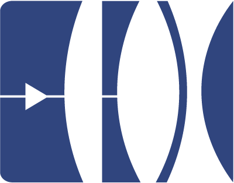
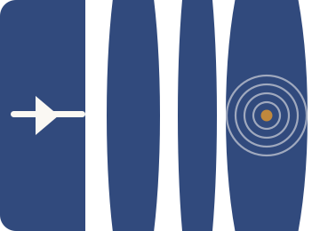
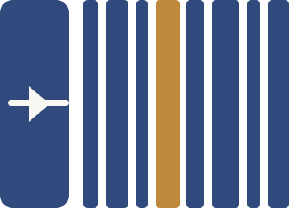

Three riffs on your photography mark · navy #314a7d + jazz-brass #c0883c · Surprise-me pass
The source: a multi-element lens cross-section with a play triangle on the barrel. The through-line I kept: the lens train + the play triangle.

Closest to your mark: the same optical train and play triangle, but the final element resolves into a vinyl record — grooves and a brass spindle. Photography lineage → the record. The most literal, lowest-risk riff.

The optical elements re-read as LP spines on a shelf — the canon as a collection. Varying spine widths echo both your lens train and the app’s variable-width timeline years; one brass spine is the “key” record. Most conceptual / most tied to the app.

The practical site-header version: a compact barrel→record mark + “A JAZZ CANON” in an elegant serif, with the year range as a tracked tagline. This is what would sit top-left on jazzcanon.com.
All SVG (scales cleanly, tiny file). Final pick gets: a white/reversed variant for dark surfaces, an outlined-type version of the wordmark (so it’s font-independent), and a favicon export. Tell me which direction to push — or mix (e.g., Concept 1 mark + Concept 3 wordmark).